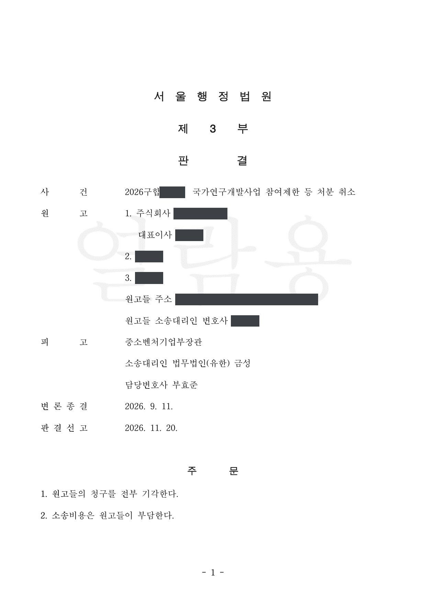

국가연구개발사업 공인시험성적서 미제출 과제의 '극히 불량' 평가에 따른 참여제한·제재부가금 부과처분 취소소송
서울행정법원 · 담당변호사 부효준
판결문

사건의 요지
압연롤 국산화 개발 과제를 수행한 연구개발기관이 사업계획서에서 공인인증기관 시험으로 확인하기로 한 성능지표에 관하여 최종보고서에 시험성적서를 내지 않아 재평가와 이의신청 평가에서 거듭 '극히 불량' 판정을 받고, 회사와 전·현직 대표자가 1년의 참여제한처분을, 회사가 2억여 원의 제재부가금 부과처분을 받은 사건입니다. 자체 측정값과 뒤늦게 낸 일부 시험성적서로 목표 달성을 인정할 수 있는지, 「국가연구개발혁신법」 제32조 제1항 제1호의 '수행과정과 결과가 극히 불량한 경우'에 해당하는지, 재량권 일탈·남용 여부가 다투어졌고, 전문가 평가위원회의 판단이 존중되어야 한다는 이유로 처분이 모두 적법하다고 판단되었습니다.
주제별 사례참여제한처분 취소소송제재부가금 부과처분
사건의 주요 내용
주물 제품을 만드는 원고 회사는 2020년 시장확대형 기술개발 지원사업에 '주조를 통한 압연롤 개발' 과제로 선정되어 2020년 12월 협약을 맺었습니다(연구개발기간 2년, 정부출연금 6억 원). 협약에 첨부된 사업계획서에는 인장강도, 기지 경도, 탄화물량, 경화깊이, 크랙깊이의 다섯 가지 성능지표와 개발목표치가 정해져 있었고, 앞의 네 가지는 공인시험·인증기관의 시험으로, 크랙깊이는 수요처의 측정으로 달성 여부를 확인하기로 되어 있었습니다.
원고 회사가 낸 최종보고서에는 공인기관 시험성적서가 첨부되지 않았고, 탄화물량은 보고서의 수치로도 목표치에 미치지 못하였습니다. 과제는 2023년 8월 '현장점검대상', 같은 해 9월 '재평가대상'으로 판정되었고, 2023년 10월 재평가에서 '미완료(극히 불량)' 판정을 받았습니다. 원고들은 이의신청을 하면서 처음으로 경도와 인장강도에 관한 시험성적서를 냈으나, 2023년 11월 이의신청 평가위원회도 같은 판정을 유지하였습니다.
처분청은 2025년 4월 2년의 참여제한과 5억여 원의 제재부가금을 사전통지하였고, 원고들의 재검토 요청에 따라 열린 제재처분 재검토위원회는 연구노트 등으로 연구 수행과정이 일부 확인된다는 점을 들어 2분의 1 감경을 의결하였습니다. 처분청은 2025년 6월 국가연구개발혁신법 제32조 제1항 제1호에 따라 원고 회사와 전·현직 대표자(현 대표자가 과제책임자)에게 각 1년의 참여제한처분을, 원고 회사에 2억여 원의 제재부가금 부과처분을 하였고, 원고들은 그 취소를 구하는 소송을 제기하였습니다.
원고의 주장
- 과제를 성실하게 수행하여 다섯 가지 성능지표 가운데 탄화물량을 뺀 나머지의 목표를 달성하였고, 탄화물량도 종전 기술 수준을 상당히 개선하여 목표치에 근접하였다고 주장하였습니다. 과제책임자가 연구성과를 바탕으로 논문 2편을 썼고 회사가 시제품을 수주하기도 하였으므로 수행과정과 결과가 극히 불량하다고 볼 수 없다고 하였습니다.
- 최종보고서를 낼 때 시험성적서를 빠뜨리기는 하였으나 이의신청 과정에서 공인기관의 시험성적서를 내어 보완하였는데도, 처분청이 공인성적서 제출 미비라는 형식적인 이유로 '극히 불량' 판정을 하였으므로 처분사유가 인정되지 않는다고 주장하였습니다.
- 일정한 연구성과를 냈고 고의로 연구를 게을리하거나 연구비를 유용한 사실이 없으며, 처분으로 회사가 겪을 경영상 어려움 등을 고려하면 처분이 지나치게 가혹하여 재량권을 일탈·남용한 것이라고 주장하였습니다.
부효준 변호사의 주장
- 과제가 당초 계획대로 적정하게 수행되었는지는 고도의 과학기술적 전문성이 필요한 판단이고, 전문가로 구성된 평가위원회가 최종평가·재평가·이의신청 평가를 차례로 거쳐 위원 전원의 일치된 의견으로 '극히 불량'으로 판정하였으므로 그 판단은 존중되어야 한다고 주장하였습니다.
- 사업계획서가 정한 평가방법은 공인인증기관의 시험이므로 자체 측정값만으로는 목표 달성을 인정할 수 없다는 점을 밝히고, 뒤늦게 제출된 시험성적서를 지표별로 따졌습니다. 인장강도 성적서는 사업계획서와 다른 시험규격으로 측정되었고 시험편에 따라 목표에 크게 못 미치는 값도 있었으며, 경도 성적서의 수치는 이의신청 발표자료와 맞지 않고, 쇼어경도 값만으로는 경화깊이를 확인할 수 없으며, 탄화물량은 보고된 수치 자체가 목표 미달이고, 크랙깊이는 측정 자료가 없다는 점을 지적하였습니다.
- 핵심기술의 개발과정을 확인할 자료가 부족하고 성능평가에 쓴 시료도 보관되어 있지 않아 추가 검증이 불가능하였다는 점, 처분청이 이미 시행령 [별표 6]·[별표 7]이 허용하는 최대한도인 2분의 1을 감경하였다는 점을 들어 처분에 재량권 일탈·남용이 없다고 주장하였습니다.
법원의 판단
법원은 행정청이 고도의 전문적·기술적 사항에 관하여 한 전문적 판단은 사실인정에 중대한 오류가 있거나 객관적으로 불합리·부당하다는 등의 특별한 사정이 없는 한 존중되어야 한다는 대법원 판례를 기준으로 삼았습니다. 내구도에 관한 성능지표의 달성이 매우 중요한 과제이고 사업계획서가 공인인증기관의 시험을 평가방법으로 정한 이상, 자체 측정으로 개선된 수치를 얻었다는 것만으로는 부족하고, 전문가 위원회의 평가와 재평가·이의신청 절차를 거친 판단은 최대한 존중될 필요가 있다고 하였습니다.
성능지표별로는, 인장강도 성적서의 측정방법이 사업계획서와 다르고 시험편마다 오차가 커서 목표 달성을 판단하기 어렵고, 탄화물량은 보고된 수치 자체가 목표 미달이며, 경화깊이는 시료의 채취 위치와 깊이를 확인할 수 없고, 크랙깊이는 측정 자료가 없다고 보았습니다. 일부 평가위원이 경도와 인장강도의 목표 달성을 인정하기는 하였으나 그 위원들도 종합평가에서는 '극히 불량'으로 판정하였고, 모든 위원이 인정하지 않은 세 항목의 비중이 전체의 70%에 이른다는 점을 들어 결과물이 매우 미흡하다는 판단이 불합리하지 않다고 하였습니다.
수행과정에 관하여도, 핵심기술의 개발과정이 구체적으로 제시되지 않았고 연구노트에 실험과 결과가 충분히 기록되어 있지 않았으며, 최종보고서 제출 뒤 거의 1년이 지나서야 일부 지표의 시험성적서를 냈고 시료를 보관하지 않아 추가 시험도 할 수 없었다는 점에서 매우 미흡하였다고 평가하였습니다.
재량권에 관하여는, 정부지원금이 국가예산을 재원으로 하므로 협약에 따른 연구를 충실히 수행하고 성과를 객관적으로 검증하게 할 공익적 필요가 크고, 처분청이 최대 감경한도인 2분의 1을 이미 감경하였으며, 처분으로 일반적인 영업활동이나 연구성과의 활용 자체가 제한되는 것은 아니라는 점을 들어 일탈·남용을 부정하고, 원고들의 청구를 모두 받아들이지 않았습니다.
행정청이 관계 법령이 정하는 바에 따라 고도의 전문적이고 기술적인 사항에 관하여 전문적인 판단을 하였다면, 판단의 기초가 된 사실인정에 중대한 오류가 있거나 판단이 객관적으로 불합리하거나 부당하다는 등의 특별한 사정이 없는 한 존중되어야 하고, 행정청이 위와 같은 전문적인 판단에 기초하여 재량권의 행사로서 한 처분은 비례의 원칙을 위반하거나 사회통념상 현저하게 타당성을 잃는 등 재량권을 일탈하거나 남용한 것이 아닌 이상 위법하다고 볼 수 없다(대법원 2016. 1. 28. 선고 2013두21120 판결 등 참조).
서울행정법원 판결 이유 '3. 나. 1) 처분사유의 존부'
이러한 평가방법은 개발된 제품이 당초 계획한 성능을 실제로 갖추었는지를 객관적으로 확인하기 위한 것이므로 목표치 달성 여부를 판단하는 데에는 원고 회사가 자체적인 측정을 통하여 개선된 수치를 얻었다는 것만으로는 부족하고, 공인인증기관의 시험 결과, 해당 인증기관의 시험이 이 사건 과제의 결과물에 대한 것인지 여부, 인증기관이 실시한 시험의 방법, 규격, 시험 환경 등이 각 성능지표의 측정에 적합한 것인지 여부 등을 종합적으로 검토하여야 한다.
서울행정법원 판결 이유 '3. 나. 1) 가)'
모든 평가위원이 목표치 달성으로 인정할 수 없다고 본 탄화물량, 경화깊이, 크랙깊이 항목이 전체 성능지표에서 차지하는 비중은 70%에 달하는 점, 평가위원들은 공통적으로 시제품의 성능을 객관적으로 확인하기 위한 시험자료의 적정성과 신뢰성에 관하여 의문이 있다고 지적한 점 등을 종합하면, 일부 성능지표에서 목표에 부합하는 수치가 확인되었다는 사정을 고려하더라도 이 사건 과제의 최종적인 결과물이 매우 미흡하다는 판단이 불합리하다고 할 수 없다.
서울행정법원 판결 이유 '3. 나. 1) 다)'
※ 판결 이유 가운데 이 사건의 판단 기준이 된 부분을 그대로 옮긴 것으로, 당사자 이름 등은 가리고 금액은 어림으로 적었습니다.
이 사건이 보여 주는 것
사업계획서에 성능지표의 평가방법을 공인시험·인증기관의 시험으로 적었다면, 목표 달성은 그 방법으로 증명하여야 합니다. 법원은 자체 측정으로 얻은 수치만으로는 부족하다고 하였고, 뒤늦게 낸 시험성적서도 사업계획서가 정한 시험규격과 같은지, 과제의 결과물에 대한 시험인지, 시료의 채취 위치 등을 확인할 수 있는지를 하나하나 따졌습니다. 시험성적서는 최종보고서 단계에서 계획서대로 갖추어야 하고, 시제품의 시료를 보관해 두지 않으면 뒤에 추가 시험으로 보완할 길도 막힙니다.
목표에 미치지 못한 과제라도 연구개발과 실험 과정을 재현하고 검증할 수 있는 체계적인 자료가 남아 있는지가 수행과정 평가의 핵심이라는 점도 확인됩니다. 연구노트 등으로 수행과정이 일부라도 소명되면 재검토 절차에서 제재 수준이 2분의 1까지 감경될 수 있지만, 전문가 평가위원회가 재평가와 이의신청 평가를 거쳐 유지한 '극히 불량' 판정 자체는 법원에서도 존중됩니다.
비슷한 처분을 받으셨다면
국가연구개발 제재처분은 사전통지를 받은 날부터 20일 이내에 재검토 요청 의견을 내고, 처분이 있음을 안 날부터 90일 이내에 취소소송을 제기해야 합니다. 처분서나 사전통지서를 받은 날짜부터 확인해 드립니다.